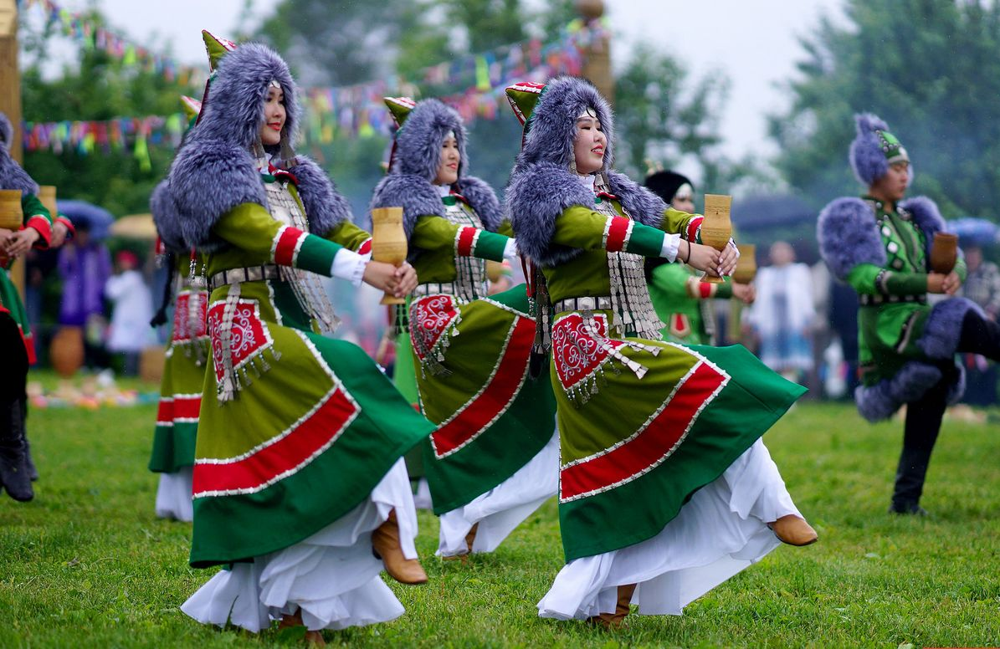
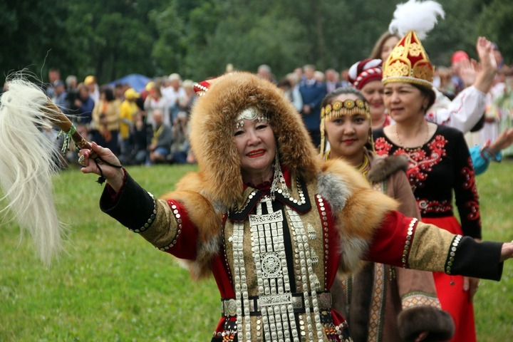
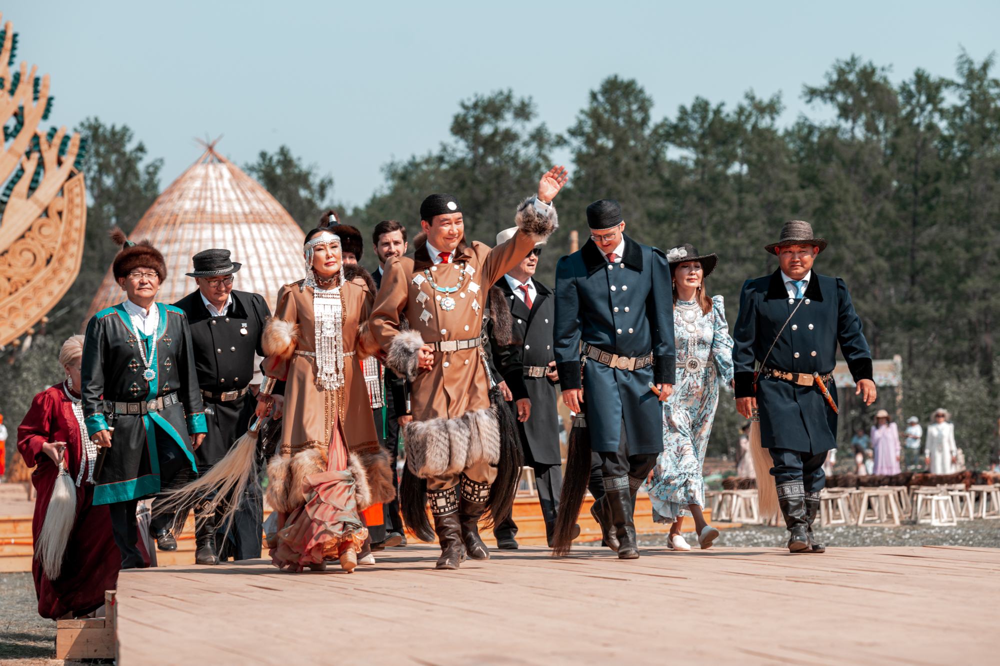
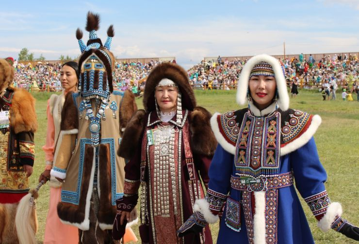

Якутский народ
Крупнейший тюркский народ Сибири с богатой культурой
О народе
Якуты — тюркский народ, коренное население Республики Саха (Якутия). Якутский язык относится к тюркской группе языков.
Аудиогид
Фотогалерея



